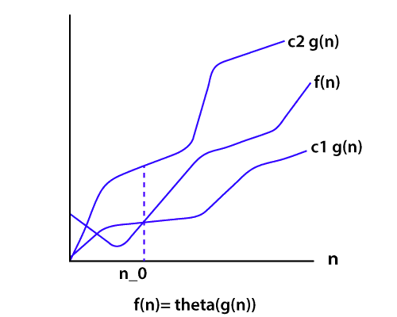
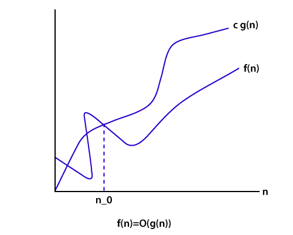
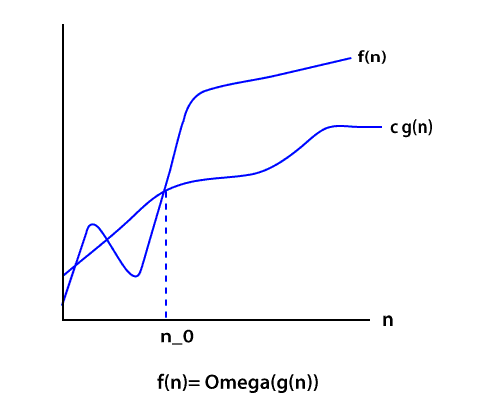
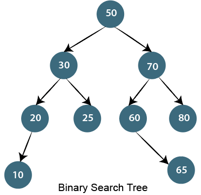

<!DOCTYPE html>
<html lang="en">

</html>
<html>

<head>
    <meta charset="UTF-8">
    <meta http-equiv="X-UA-Compatible" content="IE=edge">
    <title> Top Algorithm Interview Questions - Interview of Geeks</title>

    <!-- Css -->
    <link rel="favicon icon" href="favicon.png">
    <link rel="stylesheet" href="../style/style.css">
    <link href="https://cdn.jsdelivr.net/npm/bootstrap@5.0.0-beta2/dist/css/bootstrap.min.css" rel="stylesheet"
        integrity="sha384-BmbxuPwQa2lc/FVzBcNJ7UAyJxM6wuqIj61tLrc4wSX0szH/Ev+nYRRuWlolflfl" crossorigin="anonymous">

    <!-- Scripts -->
    <script src="https://code.jquery.com/jquery-3.2.1.slim.min.js"></script>
    <script src="https://cdn.jsdelivr.net/npm/bootstrap@5.0.0-beta2/dist/js/bootstrap.bundle.min.js"
        integrity="sha384-b5kHyXgcpbZJO/tY9Ul7kGkf1S0CWuKcCD38l8YkeH8z8QjE0GmW1gYU5S9FOnJ0"
        crossorigin="anonymous"></script>

    <!-- Meta Tags -->
    <meta name="keywords"
        content="interviewofgeeks, interview of geeks, interview preperation, interview questions, interview, algorithm interview questions, algorithm interview, algorithm questions, most asked algorithm questions, interview questions, interview questions and answers, control systems, comapny interview questions and answers, typescript, java, php, interview, agile, jira, blockchain, react, machine learning, django, hadoop, hibernate, spring, android, companies interview questions, blockchain interview questions, question and answer, python, c, c#, cpp, database, beginners, professionals, basic, frequently, asked">
    <meta name="author" content="Ajay Kumar">
    <meta name="description"
        content="Interviewofgeeks - Top Algorithm Interview Questions with a list of top frequently asked, Control Systems interview questions and answers, blockchain interview questions, .net, php, database, hr, spring, hibernate, android, oracle, sql, asp.net, c#, python, c, c++ etc.">
    <meta name="viewport" content="width=device-width, initial-scale=1.0">

    <!-- Global site tag (gtag.js) - Google Analytics -->
    <script data-ad-client="ca-pub-4645356742269640" async
        src="https://pagead2.googlesyndication.com/pagead/js/adsbygoogle.js"></script>
    <script async src="https://www.googletagmanager.com/gtag/js?id=G-ZX3ZK4E5HC"></script>
    <script>
        window.dataLayer = window.dataLayer || [];
        function gtag() { dataLayer.push(arguments); }
        gtag('js', new Date());

        gtag('config', 'G-ZX3ZK4E5HC');
    </script>

    <style>
        body {
            font-family: 'Open Sans', sans-serif;
            background-color: rgb(250, 250, 250);
            overflow-x: hidden;
        }
    </style>


</head>
<!-- Header -->

<body>

    <div class="">
        <nav class="navbar bg-white" id="siteloog">
            <a href="../index.html"><span class="navbar-brand mb-0 h1"></span></a>
        </nav>
        <!-- Header Menu -->
        <nav class="navbar navbar-expand-lg navbar-light bg-white">
            <button class="navbar-toggler" type="button" data-toggle="collapse" data-target="#navbarNav"
                aria-controls="navbarNav" aria-expanded="false" aria-label="Toggle navigation">
                <span class="navbar-toggler-icon"></span>
            </button>
            <div class="collapse navbar-collapse" id="navbarNav">
                <ul class="navbar-nav">
                    <li class="nav-item ">
                        <a class="nav-link" href="../index.html">Home</a>
                    </li>
                    <li class="nav-item">
                        <a class="nav-link" href="data-structure.html">Data Structure</a>
                    </li>
                    <li class="nav-item">
                        <a class="nav-link  active" href="algorithm.html">Algorithm</a>
                    </li>
                    <li class="nav-item">
                        <a class="nav-link" href="company-interview.html">Company Interview</a>
                    </li>
                    <li class="nav-item">
                        <a class="nav-link" href="technical-interview.html">Technical Interview</a>
                    </li>
                    <li class="nav-item">
                        <a class="nav-link" href="web-interview.html">Web Interview</a>
                    </li>
                    <li class="nav-item">
                        <a class="nav-link" href="java-interview.html">Java Interview</a>
                    </li>
                    <li class="nav-item">
                        <a class="nav-link" href="database-interview.html">Data Base Interview</a>
                    </li>
                    <li class="nav-item">
                        <a class="nav-link" href="python-interview.html">Python Interview</a>
                    </li>
                </ul>
            </div>
        </nav>

        <!-- Main div -->
        <div class="container  ">
            <div class="row" style="margin-top: 25px;">
                <div class="col-md-8 bg-white shadow-sm">
                    <span>
                        <h4 class="hm-welcome">Algorithm Interview Questions</h4>
                    </span><span>25 Questions</span>

                    <hr class="divider">
                    <p class="read-para">An algorithm is an integral part of any process so that interviewers will ask
                        you many questions related to the algorithm. <br><br>Here is the list of some most asked
                        algorithm interview questions and their answer. These questions are also beneficial for academic
                        and competitive exams perspective.</p>
                    <br>

                    <div>
                        <ol class="qa-list" id="javamultithreadingquestions">
                            <li>
                                <h5 class="question">1. What is an algorithm? What is the need for an algorithm?</h5>
                                <p class="read-para">An algorithm is a well-defined computational procedure that takes
                                    some values or the set of values, as an input and produces a set of values or some
                                    values, as an output. <br><br><span> Need for Algorithm</span> <br><br> The
                                    algorithm provides
                                    the basic idea of the problem and an approach to solve it. Some reasons to use an
                                    algorithm are as follows.</p>
                                <ul class="read-para">
                                    <li>The algorithm improves the efficiency of an existing technique.</li>
                                    <li>To compare the performance of the algorithm with respect to other techniques.
                                    </li>
                                    <li>The algorithm gives a strong description of requirements and goal of the
                                        problems to the designer.</li>
                                    <li>The algorithm provides a reasonable understanding of the flow of the program.
                                    </li>
                                    <li>The algorithm measures the performance of the methods in different cases (Best
                                        cases, worst cases, average cases).</li>
                                    <li>he algorithm identifies the resources (input/output, memory) cycles required by
                                        the algorithm.</li>
                                    <li>With the help of an algorithm, we can measure and analyze the complexity time
                                        and space of the problems.</li>
                                    <li>The algorithm also reduces the cost of design.</li>
                                </ul>
                                <hr>
                            </li>

                            <li>
                                <h5 class="question">2. What is the Complexity of Algorithm?</h5>
                                <p class="read-para">The complexity of the algorithm is a way to classify how efficient
                                    an algorithm is compared to alternative ones. Its focus is on how execution time
                                    increases with the data set to be processed. The computational complexity of the
                                    algorithm is important in computing. <br> <br> It is very suitable to classify
                                    algorithm based on the relative amount of time or relative amount of space they
                                    required and specify the growth of time/ space requirement as a function of input
                                    size. <br><br> <span>Time complexity</span> <br><br>Time complexity is a Running
                                    time of a program as a function of the size of the input. <br><br> <span>Space
                                        complexity</span> <br><br>Space complexity analyzes the algorithms, based on how
                                    much space an algorithm needs to complete its task. Space complexity analysis was
                                    critical in the early days of computing (when storage space on the computer was
                                    limited). <br><br>Nowadays, the problem of space rarely occurs because space on the
                                    computer is broadly enough. <br><br> We achieve the following types of analysis for
                                    complexity <br><br><span>Worst-case: f(n)</span> <br><br>It is defined by the
                                    maximum number of steps taken on any instance of size n. <br><br> <span>Best-case:
                                        f(n)</span> <br><br>It is defined by the minimum number of steps taken on any
                                    instance of size n. <br><br><span>Average-case: f(n)</span> <br><br>It is defined by
                                    the average number of steps taken on any instance of size n.</p>
                                <hr>
                            </li>

                            <li>
                                <h5 class="question">3. Write an algorithm to reverse a string. For example, if my
                                    string is "uhsnamiH" then my result will be "India".</h5>
                                <p class="read-para">Algorithm to reverse a string. <br><br><span>Step1:</span> start
                                    <br><span>Step2:</span> Take two variable i and j <br> <span>Step3:</span> do length
                                    (string)-1, to set J at last position <br><span>Step4:</span> do string [0], to set
                                    i on the first character. <br><span>Step5:</span> string [i] is interchanged with
                                    string[j] <br><span>Step6:</span> Increment i by 1 <br><span>Step7:</span> Increment
                                    j by 1 <br><span>Step8:</span> if i>j then go to step3 <br><span>Step9:</span> Stop
                                </p>

                                <hr>
                            </li>

                            <li>
                                <h5 class="question">4. Write an algorithm to insert a node in a sorted linked list.
                                </h5>
                                <p class="read-para">Algorithm to insert a node in a sorted linked list. <br><br>
                                    <span>Case1:</span> <br><br> Check if the linked list is empty then set the node as
                                    head and return it.
                                </p>
                                <code>
                                        New_node-&#62; Next= head;  <br>Head=New_node
                                    </code>
                                <p class="read-para">
                                    <span>Case2:</span> <br><br>Insert the new node in middle
                                </p>
                                <code>
                                    While( P!= insert position)   <br>
{   <br>
P= p-> Next;   <br>
}   <br>
Store_next=p->Next;   <br>
P->Next= New_node;   <br>
New_Node->Next = Store_next; 
                                </code>
                                <p class="read-para">
                                    <span>Case3:</span> <br><br>Insert a node at the end
                                </p>
                                <code>
                                    While (P->next!= null) <br> 
{  <br>
P= P->Next;  <br>
}  <br>
P->Next = New_Node;  <br>
New_Node->Next = null;  
                                </code>

                                <hr>
                            </li>

                            <li>
                                <h5 class="question">5. What are the Asymptotic Notations?</h5>
                                <p class="read-para">Asymptotic analysis is used to measure the efficiency of an
                                    algorithm that doesn't depend on machine-specific constants and prevents the
                                    algorithm from comparing the time taking algorithm. Asymptotic notation is a
                                    mathematical tool that is used to represent the time complexity of algorithms for
                                    asymptotic analysis. <br><br>The three most used asymptotic notation is as follows.
                                    <br><br><span>θ Notation</span> <br><br>θ Notation defines the exact asymptotic
                                    behavior. To define a behavior, it bounds functions from above and below. A
                                    convenient way to get Theta notation of an expression is to drop low order terms and
                                    ignore leading constants.</p>
                                
                                <p class="read-para"> <span>Big O Notation</span> <br><br>The Big O notation bounds a
                                    function from above, it defines an upper bound of an algorithm. Let's consider the
                                    case of insertion sort; it takes linear time in the best case and quadratic time in
                                    the worst case. The time complexity of insertion sort is O(n2). It is useful when we
                                    only have upper bound on time complexity of an algorithm.</p>
                                
                                <p class="read-para"><span>Ω Notation</span> <br><br> Just like Big O notation provides an asymptotic upper bound, the Ω Notation provides an asymptotic lower bound on a function. It is useful when we have lower bound on time complexity of an algorithm. </p>
                                
                                <hr>
                            </li>

                            <li>
                                <h5 class="question">6. Explain the Bubble sort algorithm?
                                </h5>

                                <p class="read-para">Bubble sort is the simplest sorting algorithm among all sorting algorithm. It repeatedly works by swapping the adjacent elements if they are in the wrong order. <br><br>

                                    e.g. <br><br>
                                    
                                    (72538) we have this array for sorting. <br><br>
                                    
                                    <span>Pass1:</span> <br> <br>
                                    
                                    (72538) -> (27538) swap 7 and 2. <br>
                                    (27538) -> (25738) swap 7 and 5. <br>
                                    (25738) -> (25378) swap 7 and 3. <br>
                                    (25378) -> (25378) algorithm does not swap 7 and 8 because 7&#60;8. <br> <br>
                                    
                                    <span>Pass2:</span> <br><br>
                                    
                                    (25378) -> (25378) algorithm does not swap 2 and 5 because 2&#60;5. <br>
                                    (25378) -> (23578) swap 3 and 5. <br>
                                    (23578) -> (23578) algorithm does not swap 5 and 7 because 5&#60;7. <br>
                                    (23578) -> (23578) algorithm does not swap 7 and 8 because 7&#60;8. <br><br>
                                    
                                    Here, the sorted element is (23578).
                                </p>
                                <hr>
                            </li>

                            <li>
                                <h5 class="question">7. How to swap two integers without swapping the temporary variable in Java?</h5>
                                <p class="read-para">It's a very commonly asked trick question. There are many ways to solve this problem. <br><br>But the necessary condition is we have to solve it without swapping the temporary variable. <br><br> If we think about integer overflow and consider its solution, then it creates an excellent impression in the eye of interviewers. <br><br> Suppose we have two integers I and j, the value of i=7 and j=8 then how will you swap them without using a third variable. This is a journal problem. <br><br> We need to do this using Java programming constructs. We can swap numbers by performing some mathematical operations like addition, subtraction, multiplication, and division. But maybe it will create the problem of integer overflow. <br><br> <span>Using addition and subtraction</span> <br><br> <code>a= a + b; <br>b=a - b; // this will act like (a+b)-b, now b is equal to a. <br>a=a - b; // (a+b)-a, now, a is equal to b.</code> <br><br> It is a nice trick. But in this trick, the integer will overflow if the addition is more than the maximum value of int primitive as defined by Integer.MAX_VALUE and if subtraction is less than minimum value i.e., Integer.MIN_VALUE. <br><br><span>Using XOR trick</span> <br><br>Another solution to swap two integers without using a third variable (temp variable) is widely recognized as the best solution, as it will also work in a language which doesn't handle integer overflow like Java example C, C++. Java supports several bitwise operators. One of them is XOR (denoted by ^). <br><br> <code>x=x^y; <br>y=x^y; <br>x=x^y;</code>
                                </p>
                                <hr>
                            </li>

                            <li>
                                <h5 class="question">8. What is a Hash Table? How can we use this structure to find all anagrams in a dictionary?</h5>
                                <p class="read-para">
                                    A Hash table is a data structure for storing values to keys of arbitrary type. The Hash table consists of an index into an array by using a Hash function. Indexes are used to store the elements. We assign each possible element to a bucket by using a hash function. Multiple keys can be assigned to the same bucket, so all the key and value pairs are stored in lists within their respective buckets. Right hashing function has a great impact on performance. <br><br>To find all anagrams in a dictionary, we have to group all words that contain the same set of letters in them. So, if we map words to strings representing their sorted letters, then we could group words into lists by using their sorted letters as a key.
                                </p>
                                <code>
                                    FUNCTION find_anagrams(words)   <br>
                                    word_groups = HashTable&#60;String, List>   <br>
                                    FOR word IN words   <br>
                                        word_groups.get_or_default(sort(word), []).push(word)   <br>
                                    END FOR   <br>
                                    anagrams = List   <br>
                                    FOR key, value IN word_groups   <br>
                                        anagrams.push(value)   <br>
                                    END FOR   <br>
                                    RETURN anagrams  
                                </code>
                                <p class="read-para">The hash table contains lists mapped to strings. For each word, we add it to the list at the suitable key, or create a new list and add it to it.</p>
                                <hr>
                            </li>

                            <li>
                                <h5 class="question">9. What is Divide and Conquer algorithms?</h5>
                                <p class="read-para">
                                    Divide and Conquer is not an algorithm; it's a pattern for the algorithm. It is designed in a way as to take dispute on a huge input, break the input into minor pieces, and decide the problem for each of the small pieces. Now merge all of the piecewise solutions into a global solution. This strategy is called divide and conquer. <br><br> <span>Divide and conquer uses the following steps to make a dispute on an algorithm.</span> <br><br><span> Divide:</span> In this section, the algorithm divides the original problem into a set of subproblems. <br><br> <span>Conquer:</span> In this section, the algorithm solves every subproblem individually. <br><br> <span>Combine:</span> In this section, the algorithm puts together the solutions of the subproblems to get the solution to the whole problem.
                                </p>
                                <hr>
                            </li>

                            <li>
                                <h5 class="question">10. Explain the BFS algorithm?</h5>
                                <p class="read-para">
                                    BFS (Breadth First Search) is a graph traversal algorithm. It starts traversing the graph from the root node and explores all the neighboring nodes. It selects the nearest node and visits all the unexplored nodes. The algorithm follows the same procedure for each of the closest nodes until it reaches the goal state. <br><br> 
                                    <span>Algorithm</span> <br> <br>
                                    <span>Step1: </span>Set status=1 (ready state) <br>
                                    <span>Step2: </span>Queue the starting node A and set its status=2, i.e. (waiting state) <br>
                                    <span>Step3: </span>Repeat steps 4 and 5 until the queue is empty.  <br>
                                    <span>Step4: </span>Dequeue a node N and process it and set its status=3, i.e. (processed state) <br>
                                    <span>Step5: </span>Queue all the neighbors of N that are in the ready state (status=1) and set their status =2 (waiting state) <br>
                                    [Stop Loop] <br><br>
                                    <span>Step6: </span>Exit
                                </p>
                                <hr>
                            </li>

                            <li>
                                <h5 class="question">11. What is Dijkstra's shortest path algorithm?</h5>
                                <p class="read-para">Dijkstra's algorithm is an algorithm for finding the shortest path from a starting node to the target node in a weighted graph. The algorithm makes a tree of shortest paths from the starting vertex and source vertex to all other nodes in the graph. <br><br>

                                    Suppose you want to go from home to office in the shortest possible way. You know some roads are heavily congested and challenging to use this, means these edges have a large weight. In Dijkstra's algorithm, the shortest path tree found by the algorithm will try to avoid edges with larger weights.</p>
                                <hr>
                            </li>

                            <li>
                                <h5 class="question">12. Give some examples of Divide and Conquer algorithm?</h5>
                                <p class="read-para">Some problems that use Divide and conquer algorithm to find their solution are listed below.
                                </p>
                                <ul class="read-para">
                                    <li>Merge Sort</li>
                                    <li>Quick Sort</li>
                                    <li>Binary Search</li>
                                    <li>Strassen's Matrix Multiplication</li>
                                    <li>Closest pair (points)</li>
                                </ul>
                                <hr>
                            </li>

                            <li>
                                <h5 class="question">13. What are Greedy algorithms? Give some example of it?</h5>
                                <p class="read-para">
                                    A greedy algorithm is an algorithmic strategy which is made for the best optimal choice at each sub stage with the goal of this, eventually leading to a globally optimum solution. This means that the algorithm chooses the best solution at the moment without regard for consequences. <br><br>
                                    In other words, an algorithm that always takes the best immediate, or local, solution while finding an answer. <br><br>
                                    Greedy algorithms find the overall, ideal solution for some idealistic problems, but may discover less-than-ideal solutions for some instances of other problems. <br><br>Below is a list of algorithms that finds their solution with the use of the Greedy algorithm.
                                </p>
                                <ul class="read-para">
                                    <li>Travelling Salesman Problem</li>
                                    <li>Prim's Minimal Spanning Tree Algorithm</li>
                                    <li>Kruskal's Minimal Spanning Tree Algorithm</li>
                                    <li>Dijkstra's Minimal Spanning Tree Algorithm</li>
                                    <li>Graph - Map Coloring</li>
                                    <li>Graph - Vertex Cover</li>
                                    <li>Knapsack Problem</li>
                                    <li>Job Scheduling Problem</li>
                                </ul>
                                <hr>
                            </li>

                            <li>
                                <h5 class="question">14. What is a linear search?</h5>
                                <p class="read-para">Linear search is used on a group of items. It relies on the technique of traversing a list from start to end by visiting properties of all the elements that are found on the way. <br><br>
                                    For example, suppose an array of with some integer elements. You should find and print the position of all the elements with their value. Here, the linear search acts in a flow like matching each element from the beginning of the list to the end of the list with the integer, and if the condition is `True then printing the position of the element.' <br><br>
                                    <span>Implementing Linear Search</span><br><br>
                                    Below steps are required to implement the linear search. <br><br>
                                    <span>Step1:</span> Traverse the array using for loop. <br>
                                    <span>Step2:</span> In every iteration, compare the target value with the current value of the array <br>
                                    <span>Step3:</span> If the values match, return the current index of the array<br> 
                                    <span>Step4:</span> If the values do not match, shift on to the next array element.  <br>
                                    <span>Step5:</span> If no match is found, return -1
                                </p>
                                <hr>
                            </li>

                            <li>
                                <h5 class="question">15. What is a Binary Search Tree?</h5>
                                <p class="read-para">The binary search tree is a special type of data structure which has the following properties.</p>
                                
                                <ul class="read-para">
                                    <li>Nodes which are less than root will be in the left subtree.</li>
                                    <li>Nodes which are greater than root (i.e., contains more value) will be right subtree.</li>
                                    <li>A binary search tree should not have duplicate nodes.</li>
                                    <li>Both sides subtree (i.e., left and right) also should be a binary search tree.</li>
                                </ul>
                                
                                
                                <hr>
                            </li>

                            <li>
                                <h5 class="question">16. Write an algorithm to insert a node in the Binary search tree?</h5>
                                <p class="read-para">Insert node operation is a smooth operation. You need to compare it with the root node and traverse left (if smaller) or right (if greater) according to the value of the node to be inserted. <br><br> <span>Algorithm:</span></p>
                                <ul class="read-para">
                                    <li>Make the root node as the current node</li>
                                    <li>If the node to be inserted &#60; root
                                        <ul>
                                            <li>If it has left child, then traverse left</li>
                                            <li>If it does not have left child, insert node here</li>
                                        </ul>
                                    </li>
                                    <li>If the node to be inserted > root
                                        <ul>
                                            <li>If it has the right child, traverse right</li>
                                            <li>If it does not have the right child, insert node here.</li>
                                        </ul>
                                    </li>

                                </ul>
                                <hr>
                            </li>

                            <li>
                                <h5 class="question">17. How to count leaf nodes of the binary tree?</h5>
                                <p class="read-para"><span>Algorithm-</span> <br> <br>Steps for counting the number of leaf nodes are:</p>
                                <ul class="read-para">
                                    <li class="read-para">If the node is null (contains null values) then return 0.</li>
                                    <li class="read-para">If encountered leaf node. Left is null and node Right is null then return 1.</li>
                                    <li>Recursively calculate the number of leaf nodes using</li>
                                </ul>
                                <p class="read-para">No. of leaf nodes= no of leaf nodes in left subtree + number of leaf nodes in the right subtree.</p>
                                <hr>
                            </li>

                            <li>
                                <h5 class="question">18. How to find all possible words in a board of characters (Boggle game)?</h5>
                                <p class="read-para">In the given dictionary, a process to do a lookup in the dictionary and an M x N board where every cell has a single character. Identify all possible words that can be formed by order of adjacent characters. Consider that we can move to any of the available 8 adjacent characters, but a word should not have multiple instances of the same cell.</p>
                                <p class="read-para"> <span>Example:</span></p>

                                <code>
                                    dictionary[] = {"Java", "Point","Quiz"};  <br> 
Array[][]    = {{'J', 'T', 'P',},   <br>
        {'U', 'A', 'A'},   <br>
        {'Q', 'S', 'V'}};   <br>
isWord(str): returns true if str is present in dictionary   <br> 
    else false.  
                                </code>
                                <p class="read-para" style="font-style:italic;">Output</p>
                                <code>
                                    Following words of the dictionary are present <br>
JAVA
                                </code>

                                <hr>
                            </li>

                            <li>
                                <h5 class="question">19. Write an algorithm to insert a node in a link list?</h5>
                                <p class="read-para"><span>Algorithm</span></p>
                                <ul class="read-para">
                                    <li>Check If the Linked list does not have any value then make the node as head and return it</li>
                                    <li>Check if the value of the node to be inserted is less than the value of the head node, then insert the node at the start and make it head.</li>
                                    <li>In a loop, find the appropriate node after which the input node is to be inserted. To find the just node start from the head, keep forwarding until you reach a node whose value is greater than the input node. The node just before is the appropriate node.</li>
                                    <li>Insert the node after the proper node found in step 3.</li>
                                </ul>
                                <hr>
                            </li>

                            <li>
                                <h5 class="question">20. How to delete a node in a given link list? Write an algorithm and a program?</h5>
                                <p class="read-para">Write a function to delete a given node from a Singly Linked List. The function must follow the following constraints:</p>
                                <ul class="read-para">
                                    <li>The function must accept a pointer to the start node as the first argument and node to be deleted as the second argument, i.e., a pointer to head node is not global.</li>
                                    <li>The function should not return a pointer to the head node.</li>
                                    <li>The function should not accept pointer to pointer to head node.</li>
                                </ul>
                                <p class="read-para">
                                    We may assume that the Linked List never becomes empty. <br><br> 
                                    Suppose the function name is delNode(). In a direct implementation, the function needs to adjust the head pointer when the node to be deleted the first node. <br><br> <span>C program for deleting a node in Linked List</span> <br><br>
                                    We will handle the case when the first node to be deleted then we copy the data of the next node to head and delete the next node. In other cases when a deleted node is not the head node can be handled generally by finding the previous node.
                                </p>
                                <code>
                                    #include &#60;stdio.h>   <br>
                                        #include &#60;stdlib.h> <br>  
                                        struct Node   <br>
                                        {     <br>
                                            int data; <br>  
                                            struct Node *next;  <br> 
                                        };   <br>
                                          <br>
                                        void delNode(struct Node *head, struct Node *n)  <br> 
                                        {   <br>
                                            if(head == n)   <br>
                                            {     <br>
                                                if(head->next == NULL)  <br> 
                                                {   <br>
                                                    printf("list can't be made empty because there is only one node. ");  <br> 
                                                    return;   <br>
                                                }   <br>
                                                head->data = head->next->data;   <br>
                                                n = head->next;   <br>
                                                head->next = head->next->next;   <br>
                                                free(n);   <br>
                                                return;   <br>
                                            }   <br>
                                                struct Node *prev = head;   <br>
                                            while(prev->next != NULL && prev->next != n)  <br> 
                                                prev = prev->next;   <br>
                                            if(prev->next == NULL)   <br>
                                            {   <br>
                                                printf("\n This node is not present in  List");   <br>
                                                return;   <br>
                                            }   <br>
                                            prev->next = prev->next->next;   <br>
                                            free(n);   <br>
                                            return;   <br>
                                        }   <br>
                                        void push(struct Node **head_ref, int new_data)   <br>
                                        {   <br>
                                            struct Node *new_node =   <br>
                                                (struct Node *)malloc(sizeof(struct Node));   <br>
                                            new_node->data = new_data;   <br>
                                            new_node->next = *head_ref;   <br>
                                            *head_ref = new_node;   <br>
                                        }   <br>
                                        void printList(struct Node *head)   <br>
                                        {   <br>
                                            while(head!=NULL)   <br>
                                            {   <br>
                                                printf("%d ",head->data);   <br>
                                                head=head->next;   <br>
                                            }   <br>
                                            printf("\n");   <br>
                                        }   <br>
                                        int main()   <br>
                                        {   <br>
                                            struct Node *head = NULL;   <br>
                                            push(&head,3);   <br>
                                            push(&head,2);   <br>
                                            push(&head,6);   <br>
                                            push(&head,5);   <br>
                                            push(&head,11);   <br>
                                            push(&head,10);   <br>
                                            push(&head,15);   <br>
                                            push(&head,12);   <br>
                                            printf("Available Link list: ");   <br>
                                            printList(head);   <br>
                                            printf("\nDelete node %d: ", head->next->next->data);   <br>
                                            delNode(head, head->next->next);   <br>
                                          <br>
                                            printf("\nUpdated  Linked List: ");   <br>
                                            printList(head);   <br>
                                          <br>
                                            /* Let us delete the the first node */  <br>
                                            printf("\nDelete first node ");   <br>
                                            delNode(head, head);   <br>
                                           <br>
                                            printf("\nUpdated Linked List: ");   <br>
                                            printList(head);   <br>
                                          <br>
                                            getchar();   <br>
                                            return 0;   <br>
                                        } 
                                </code>
                                <p class="read-para" style="font-style: italic;">Output</p>
                                <code>
                                    Available Link List: 12 15 10 11 5 6 2 3  <br>
Delete node 10: <br>
Updated Linked List: 12 15 11 5 6 2 3 <br>
Delete first node <br>
Updated Linked list: 15 11 5 6 2 3 
                                </code>
                                <hr>
                            </li>

                            <li>
                                <h5 class="question">21. Write a c program to merge a link list into another at an alternate position?</h5>
                                <p class="read-para">We have two linked lists, insert nodes of the second list into the first list at substitute positions of the first list. <br><br> <span>Example</span> <br><br> if first list is 1->2->3 and second is 12->10->2->4->6, the first list should become 1->12->2->10->17->3->2->4->6 and second list should become empty. The nodes of the second list should only be inserted when there are positions available. <br><br>Use of extra space is not allowed i.e., insertion must be done in a place. Predictable time complexity is O(n) where n is number of nodes in first list.
                                </p>

                                <code>
                                    #include &#60;stdio.h>    <br>
                                        #include &#60;stdlib.h> <br>   
                                        struct Node    <br>
                                        {    <br>
                                            int data;    <br>
                                            struct Node *next;  <br>  
                                        };    <br>
                                        void push(struct Node ** head_ref, int new_data)   <br> 
                                        {    <br>
                                            struct Node* new_node =    <br>
                                                (struct Node*) malloc(sizeof(struct Node));    <br>
                                            new_node->data = new_data;    <br>
                                            new_node->next = (*head_ref);    <br>
                                            (*head_ref) = new_node;    <br>
                                        }    <br>
                                        void printList(struct Node *head)    <br>
                                        {    <br>
                                            struct Node *temp = head;    <br>
                                            while (temp != NULL)    <br>
                                            {    <br>
                                                printf("%d ", temp->data);    <br>
                                                temp = temp->next;    <br>
                                            }    <br>
                                            printf("\n");    <br>
                                        }     <br>
                                        void merge(struct Node *p, struct Node **q)    <br>
                                        {   <br>
                                            struct Node *p_curr = p, *q_curr = *q;   <br>
                                            struct Node *p_next, *q_next;   <br>
                                            while (p_curr != NULL && q_curr != NULL)   <br>
                                            {  <br>
                                                p_next = p_curr->next;   <br>
                                                q_next = q_curr->next;   <br>
                                                q_curr->next = p_next;  <br>
                                                p_curr->next = q_curr;   <br>
                                                p_curr = p_next;   <br>
                                                q_curr = q_next;   <br>
                                            }   <br>
                                          <br>
                                            *q = q_curr;  <br>
                                        }   <br>
                                        int main()   <br>
                                        {   <br>
                                            struct Node *p = NULL, *q = NULL;   <br>
                                            push(&p, 3);   <br>
                                            push(&p, 2);   <br>
                                            push(&p, 1);   <br>
                                            printf("I Linked List:\n");   <br>
                                            printList(p);   <br>
                                          <br>
                                            push(&q, 8);   <br>
                                            push(&q, 7);   <br>
                                            push(&q, 6);   <br>
                                            push(&q, 5);   <br>
                                            push(&q, 4);   <br>
                                            printf("II Linked List:\n");   <br>
                                            printList(q);   <br>
                                          <br>
                                            merge(p, &q);   <br>
                                          <br>
                                            printf("Updated I  Linked List:\n");   <br>
                                            printList(p);   <br>
                                          <br>
                                            printf("Updated II Linked List:\n");   <br>
                                            printList(q);   <br>
                                                    getchar();   <br>
                                            return 0;   <br>
                                        } 
                                </code>
                                <p class="read-para" style="font-style: italic;">Output</p>
                                <code>
                                    I Linked List: <br>       
1 2 3<br>
II Linked List:      <br>
4 5 6 7 8                <br>
Updated I Linked List:         <br>
1 4 2 5 3 6           <br>
Updated II Linked List:          <br>
7 8 
                                </code>

                                <hr>
                            </li>

                            <li>
                                <h5 class="question">22. Explain how the encryption algorithm works?</h5>
                                <p class="read-para">Encryption is the technique of converting plaintext into a secret code format it is also called as "Ciphertext." To convert the text, the algorithm uses a string of bits called as "keys" for calculations. The larger the key, the higher the number of potential patterns for Encryption. Most of the algorithm use codes fixed blocks of input that have a length of about 64 to 128 bits, while some uses stream method for encryption.</p>
                                
                                <hr>
                            </li>

                            <li>
                                <h5 class="question">23. What Are The Criteria Of Algorithm Analysis?</h5>
                                <p class="read-para">An algorithm is generally analyzed by two factors.</p>
                                <ul class="read-para">
                                    <li>Time complexity</li>
                                    <li>Space complexity</li>
                                </ul>
                                <p class="read-para">
                                    <span>Time complexity</span> deals with the quantification of the amount of time taken by a set of code or algorithm to process or run as a function of the amount of input. In other words, the time complexity is efficiency or how long a program function takes to process a given input. <br><br>
                                    <span>Space complexity</span> is the amount of memory used by the algorithm to execute and produce the result.
                                </p>
                                <hr>
                            </li>
                            <li>
                                <h5 class="question">24. What are the differences between stack and Queue?</h5>
                                <p class="read-para">
                                    Stack and Queue both are non-primitive data structure used for storing data elements and are based on some real-world equivalent. <br><br>
                                    Let's have a look at key differences based on the following parameters. <br><br>
                                    <span>Working principle</span> <br><br>
                                    The significant difference between stack and queue is that stack uses LIFO (Last in First Out) method to access and add data elements whereas Queue uses FIFO (First in first out) method to obtain data member. <br><br>
                                    <span>Structure</span> <br><br>
                                    In Stack, the same end is used to store and delete elements, but in Queue, one end is used for insertion, i.e., rear end and another end is used for deletion of elements. <br><br>
                                    <span>Number of pointers used</span> <br><br>
                                    Stack uses one pointer whereas Queue uses two pointers (in the simple case). <br><br>
                                    <span>Operations performed</span> <br><br>
                                    Stack operates as Push and pop while Queue operates as Enqueue and dequeuer. <br><br>
                                    <span>Variants</span> <br><br>
                                    Stack does not have variants while Queue has variants like a circular queue, Priority queue, doubly ended Queue. <br><br>
                                    <span>Implementation</span><br><br>
                                    The stack is simpler while Queue is comparatively complex.
                                </p>
                                <hr>
                            </li>

                            <li>
                                <h5 class="question">25. What is the difference between the Singly Linked List and Doubly Linked List data structure?</h5>
                                <p class="read-para">This is a traditional interview question on the data structure. The major difference between the singly linked list and the doubly linked list is the ability to traverse. <br><br>

                                    You cannot traverse back in a singly linked list because in it a node only points towards the next node and there is no pointer to the previous node. <br><br>
                                    
                                    On the other hand, the doubly linked list allows you to navigate in both directions in any linked list because it maintains two pointers towards the next and previous node.</p>

                                <hr>
                            </li>
                        </ol>


                        <p><span style="font-weight: bolder;">Last Updated: </span><span id="date"></span></p>
                    </div><br>

                    <!-- Trending Technology Cards -->
                    <h5 style="font-weight: bolder;">Trending Technologies Interview Questions</h5>

                    <!-- First Row -->
                    <div class="row" style="margin-top: 25px;">
                        <div class="col ">
                            <a href="ai.html" style="text-decoration: none;">
                                <div class="card">
                                    
                                    <div class="card-body">
                                        <p class="card-text">Artificial Intelegence (AI)</p>
                                    </div>
                                </div>
                            </a>
                        </div>
                        <div class="col">
                            <a href="aws.html" style="text-decoration: none;">
                                <div class="card">
                                    
                                    <div class="card-body"><br>
                                        <p class="card-text">AWS</p>
                                    </div>
                                </div>
                            </a>
                        </div>
                        <div class="col">
                            <a href="selenium.html" style="text-decoration: none;">
                                <div class="card">
                                    
                                    <div class="card-body"><br>
                                        <p class="card-text">Selenium</p>
                                    </div>
                                </div>
                            </a>
                        </div>
                        <div class="col">
                            <a href="react.html" style="text-decoration: none;">
                                <div class="card">
                                    
                                    <div class="card-body"><br>
                                        <p class="card-text">React</p>
                                    </div>
                                </div>
                            </a>
                        </div>
                    </div>

                    <!-- Second Row -->
                    <div class="row" style="margin-top: 25px;">
                        <div class="col ">
                            <a href="cloud.html" style="text-decoration: none;">
                                <div class="card">
                                    
                                    <div class="card-body"><br>
                                        <p class="card-text">Cloud</p>
                                    </div>
                                </div>
                            </a>
                        </div>
                        <div class="col">
                            <a href="hadoop.html" style="text-decoration: none;">
                                <div class="card">
                                    
                                    <div class="card-body"><br>
                                        <p class="card-text">Hadoop</p>
                                    </div>
                                </div>
                            </a>
                        </div>
                        <div class="col">
                            <a href="data-science.html" style="text-decoration: none;">
                                <div class="card">
                                    
                                    <div class="card-body"><br>
                                        <p class="card-text">Data Science</p>
                                    </div>
                                </div>
                            </a>
                        </div>
                        <div class="col">
                            <a href="angular.html" style="text-decoration: none;">
                                <div class="card">
                                    
                                    <div class="card-body"><br>
                                        <p class="card-text">Angular</p>
                                    </div>
                                </div>
                            </a>
                        </div>
                    </div>

                    <!-- Third Row -->
                    <div class="row" style="margin-top: 25px;">
                        <div class="col ">
                            <a href="block-chain.html" style="text-decoration: none;">
                                <div class="card">
                                    
                                    <div class="card-body"><br>
                                        <p class="card-text">Blockchain</p>
                                    </div>
                                </div>
                            </a>
                        </div>
                        <div class="col">
                            <a href="git.html" style="text-decoration: none;">
                                <div class="card">
                                    
                                    <div class="card-body"><br>
                                        <p class="card-text">Git</p>
                                    </div>
                                </div>
                            </a>
                        </div>
                        <div class="col">
                            <a href="ml.html" style="text-decoration: none;">
                                <div class="card">
                                    
                                    <div class="card-body"><br>
                                        <p class="card-text">Machine Learning</p>
                                    </div>
                                </div>
                            </a>
                        </div>
                        <div class="col">
                            <a href="devops.html" style="text-decoration: none;">
                                <div class="card">
                                    
                                    <div class="card-body"><br>
                                        <p class="card-text">DevOps</p>
                                    </div>
                                </div>
                            </a>
                        </div>
                    </div>

                    <br>
                </div>

                <div class="col-md-4">
                    <!-- ************************************This is Right Div ***************************************** -->
                    <div>
                        <div class="aside list">
                            <h3>Quick Links</h3>
                            <ul>
                                <li><a href="java-interview.html#javabasicquestions">Java Basic Interview Questions</a>
                                </li>
                                <li><a href="java-interview-2.html#javainheritancequestions">Java Inheritance
                                        Questions</a></li>
                                <li><a href="java-interview.html#javaoppsquestions">Java OOP's Interview Questions</a>
                                </li>
                                <li><a href="#">Java Multithreading Questions</a></li>
                                <li><a href="java-interview.html#javastaticquestions">Java String & Exception
                                        Questions</a></li>
                                <li><a href="#">Java Collection Interview Questions</a></li>
                                <li><a href="#">JDBC Interview Questions</a></li>
                                <li><a href="#">Servlet Interview Questions</a></li>
                                <li><a href="#">JSP Interview Questions</a></li>
                                <li><a href="#">Spring Interview Questions</a></li>
                                <li><a href="#">Hibernate Interview Questions</a></li>
                                <li><a href="#">PL/SQL Interview Questions</a></li>
                                <li><a href="#">SQL Interview Questions</a></li>
                                <li><a href="#">Oracle Interview Questions</a></li>
                                <li><a href="#">Andriod Interview Questions</a></li>
                                <li><a href="#">SQL Server Interview Questions</a></li>
                                <li><a href="#">MySQL Interview Questions</a></li>
                            </ul>
                        </div>


                    </div>
                </div>
            </div>
        </div><br>

        <!-- Footer -->
        <div class="continer border-top">
            <div class="row bg-white">
                <div class="col">
                    <div class="navbar-brand mb-0 h1">
                        
                    </div>
                    <div>
                        <span></span>
                        <span class="footer-text"><a href="mailto:contact@interviewofgeeks.com"
                                style="text-decoration: none; color: #308D46;">conact@interviewofgeeks.com</a></span>
                    </div>
                </div>
                <div class="col">
                    <div class="footer-text">Company</div>
                    <div class="footer-link">
                        <ul>
                            <li><a href="../about-us.html">About Us</a></li>
                            <li><a href="../contact-us.html">Contact Us</a></li>
                            <li><a href="../privacy-policy.html">Privacy Policy</a></li>
                            <li><a href="../copyright-policy.html">Copyright Policy</a></li>
                        </ul>

                    </div>
                </div>
                <div class="col">
                    <div class="footer-text">Learn</div>
                    <div class="footer-link">
                        <ul>
                            <li><a href="algorithm.html">Algorithms</a></li>
                            <li><a href="data-structure.html">Data Structure</a></li>
                            <li><a href="../tutorials/tutorials.html">Languages</a></li>
                            <li><a href="java-interview.html">Java Interview</a></li>
                            <li><a href="python-interview.html">Python Interview</a></li>
                        </ul>
                    </div>
                </div>
                <div class="col">
                    <div class="footer-text">Contribute</div>
                    <div class="footer-link">
                        <ul>
                            <li><a href="../article.html">Write an Article</a></li>
                            <li><a href="../your-experience.html">Write Interview Experience</a></li>
                        </ul>
                    </div>
                </div>
            </div>
        </div>

        <div class="row" style="background-color: #308D46;"><span
                style="margin: 15px 0 15px 25px; font-size: large; font-weight: bolder;color: white;">@InterviewofGeeks,
                Some
                rights reserved.</span> </div>

        <!-- up Arrow -->
        <a href="#top" class="up-arrow">
            
        </a>

        <!-- Primary Div Ends -->
    </div>

    <script>
        $(document).ready(function () {
            // executes when HTML-Document is loaded and DOM is ready
            console.log("document is ready");


            $(".card").hover(
                function () {
                    $(this).addClass('shadow-lg').css('cursor', 'pointer');
                }, function () {
                    $(this).removeClass('shadow-lg');
                }
            );

            // document ready  
        });
    </script>
    <script>
        var date = new Date(2021, 2, 1);
        document.getElementById("date").innerHTML = date;
    </script>
    <script src=”https://www.jdoodle.com/assets/jdoodle-pym.min.js” type=”text/javascript”></script>

</body>

</html>